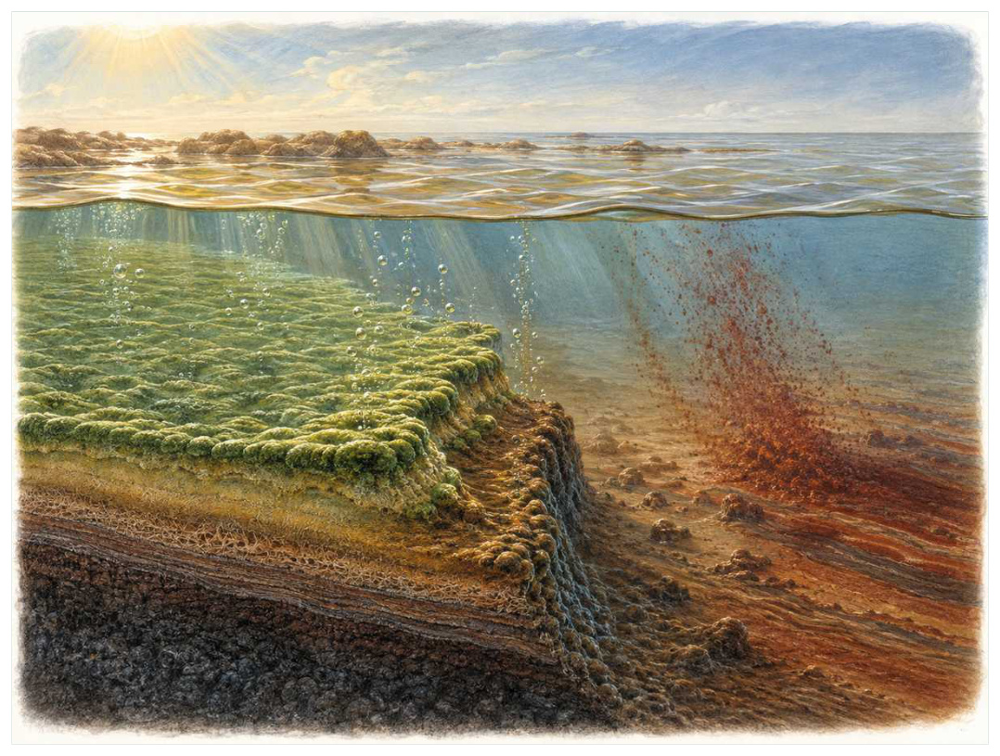
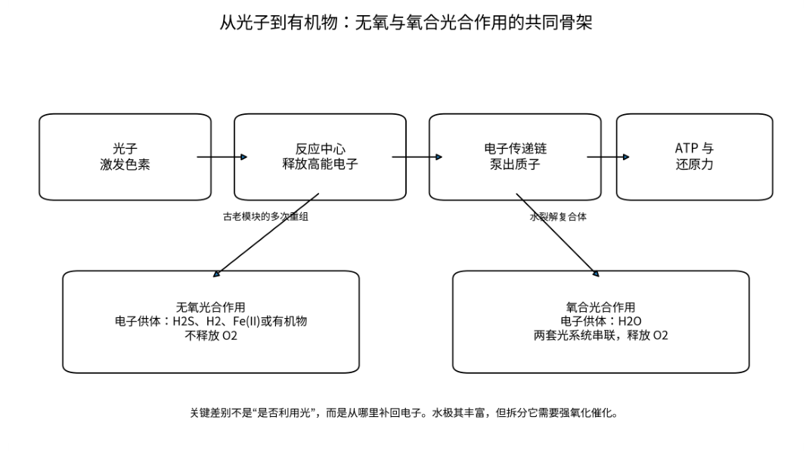

第02篇 · 氧气、真核细胞与复杂生命 · 第 4 章
氧合光合作用：用水获得电子的革命
本篇主题:氧气、真核细胞与复杂生命
氧合光合作用、氧气革命和内共生怎样改变生命可用的能量。

本章科学复原配图 （用于呈现结构与生态关系, 不替代化石照片、测量数据与系统发育证据。）
这一章进入约30亿至24亿年前，起源时间存在区间。没有任何生物预知下一时代，所有性状都只能在当时的资源、天敌和繁殖条件下接受筛选。氧合光合作用最惊人的地方不只是制造氧，而是把地球上几乎无限的水作为电子来源。此前许多光合者依赖硫化物、亚铁等受限底物；能够裂解水后，初级生产的潜在规模被彻底放大。释放的氧最初被铁、硫、火山气体和有机物迅速消耗，漫长时间里未必能在大气中积累。
进入这个时代
生态系统的真实声音不是巨兽咆哮，而是持续的摄食、分解、搬运和繁殖。每一具尸体、每一层落叶和每一次沉积扰动都会重新分配资源。在有光的浅海，蓝细菌群落白天产生局部氧气泡，夜晚呼吸又把氧耗尽。海水中的亚铁与氧反应形成铁氧化物沉降，海底出现红黑相间的矿层。对当时多数厌氧生命而言，氧既是反应性强的威胁，也是未来高效呼吸的前提。
在“氧合光合作用：用水获得电子的革命”所覆盖的时间里，不能把地理与气候当作固定背景。海陆位置、海平面、河流或植被结构会改变资源可达性，同一性状在不同地区可能得到完全相反的选择结果。
以氧合光合作用：用水获得电子的革命为例，身体结构总有材料和发育成本。硬壳提高防护却使生长和运动更昂贵，长颈扩大取食范围却增加支撑与供血问题，高代谢提高持续活动也提高食物需求。所谓成功设计从来是特定环境中的权衡。在本章中，这一约束具体落在“光合生产与呼吸消耗在日尺度上拉锯”这条关系上。
再从约30亿至24亿年前，起源时间存在区间的时间尺度看，化石记录偏爱硬组织、快速埋藏和容易出露的岩层。一次“首次出现”通常只是目前所知的最早记录，一次“突然消失”也需要排除保存窗口关闭。年代、形态和环境证据必须一起解释。它与“光系统协同”共同决定了后续变化可以沿哪些路径发生。

图 4-1 氧合光合作用把水作为电子来源，并释放氧气。
生态系统如何运转
理解“光合生产与呼吸消耗在日尺度上拉锯”需要区分个体事件与长期压力。偶然一次捕食只改变个体命运，持续数千代的稳定关系才可能推动牙齿、外壳、感觉器官或生活史发生方向性变化。
围绕“光合生产与呼吸消耗在日尺度上拉锯”，这种关系没有永恒赢家。收益随密度和环境改变：防御越常见，攻击专门化的价值越高；资源越稀少，维持昂贵结构的代价越大。化石记录中的扩张与衰退，常是这种动态平衡被外部事件打破的结果。对氧合光合作用：用水获得电子的革命而言，这一后果还会与“氧首先填充海洋和地壳中的化学汇”相互放大或抵消。
“氧首先填充海洋和地壳中的化学汇”还会改变可利用空间。一个支系若能进入新的水深、植被高度或沉积层，竞争会暂时减弱；随后追随者、捕食者和寄生者又会把新空间变成新的互动网络。
围绕“氧首先填充海洋和地壳中的化学汇”，它的长期后果通常通过幼体和繁殖体现。成年个体即使能抵抗一次危机，只要巢址、配子、幼体食物或成长季节被破坏，种群仍会在数代内下降。 对氧合光合作用：用水获得电子的革命而言，这一后果还会与“氧化环境扩大后，厌氧生境被压缩到沉积物和分层水体”相互放大或抵消。
把“氧化环境扩大后，厌氧生境被压缩到沉积物和分层水体”放进食物网，可以看到它不是孤立行为。它会影响种群密度、栖息地使用和尸体进入分解链的速度，并把后果传给并未直接参与互动的物种。
围绕“氧化环境扩大后，厌氧生境被压缩到沉积物和分层水体”，还要考虑空间异质性。一项在浅海、河谷或林冠有效的策略，移到深水、干旱内陆或开阔地便可能失去优势。因此同一支系常出现区域性扩张，而不是全球同步取代。 对氧合光合作用：用水获得电子的革命而言，这一后果还会与“光合生产与呼吸消耗在日尺度上拉锯”相互放大或抵消。
关键演化创新
在“氧合光合作用：用水获得电子的革命”中，围绕“光系统协同”，这一结构的历史应按性状拆开。支撑、感觉、供能和控制往往不是同时成熟，化石会显示镶嵌状态：某一部分已接近后来的形态，其他部分仍保留祖征。 它首先需要在约30亿至24亿年前，起源时间存在区间的生态条件下产生可测量收益。
就“光系统协同”而言，化石能较可靠地记录硬组织形态，却很少直接保留基因调控与短时行为。因此结构出现通常可信，最初用途和选择路径则应按证据标为主流解释或合理推测。 本章把它与“水的光解”并列，是为了显示复杂性状往往依赖多部分协同。
在“氧合光合作用：用水获得电子的革命”中，围绕“水的光解”，“水的光解”是本章的重要演化创新。创新并不等于某一代突然长出完整器官，它通常由旧结构的尺寸、连接、材料和表达时序逐步变化，并在每个中间阶段承担可用功能。 它首先需要在约30亿至24亿年前，起源时间存在区间的生态条件下产生可测量收益。
就“水的光解”而言，其宏观影响往往滞后于结构起源。一个创新可以先在小型、稀少支系中存在数百万年，直到环境变化或竞争者灭绝后才迅速扩张；“出现”和“成为主导”是两个不同事件。 本章把它与“活性氧防御”并列，是为了显示复杂性状往往依赖多部分协同。
在“氧合光合作用：用水获得电子的革命”中，围绕“活性氧防御”，这一结构的历史应按性状拆开。支撑、感觉、供能和控制往往不是同时成熟，化石会显示镶嵌状态：某一部分已接近后来的形态，其他部分仍保留祖征。 它首先需要在约30亿至24亿年前，起源时间存在区间的生态条件下产生可测量收益。
就“活性氧防御”而言，这也提醒我们不要寻找单一关键基因。复杂性状由多个组织和调控网络协调，改变任何一环都可能产生不同结果，演化路径因此呈树状而非直线。 本章把它与“光系统协同”并列，是为了显示复杂性状往往依赖多部分协同。
生命群像：把物种放回生态网络
蓝细菌（Cyanobacteria）
认识蓝细菌（Cyanobacteria）要先放弃静态骨架印象。它生活在太古宙晚期至今，约微米级单细胞或丝状群体，日常任务是作为海洋和淡水初级生产者维持能量与繁殖。以两个光系统协同完成氧合光合作用只是这一整套生活史中最容易化石化的部分。
对蓝细菌而言，这种生活方式还会反向塑造环境。摄食改变植物或猎物结构，足迹和掘穴改变沉积，尸体和排泄物把营养集中到局部。生态位不是它进入的固定房间，而是它与其他生物共同建造并持续修改的关系网络。 这使“以两个光系统协同完成氧合光合作用”不能脱离其海洋和淡水初级生产者角色来理解。
我们之所以能够作出上述判断，主要因为早期化石的分类常停留在形态类群，不能直接对应现代属。单一结构通常有多种功能解释，所以还要查看磨损、病理、肌肉附着、沉积环境和近缘比较。计算模型能排除不可能姿势，却不能自动恢复没有保存的软组织。
由蓝细菌这个案例看，面对仍有争议的细节，负责任的复原不是停止讲述，而是标注证据等级。形态、年代和亲缘可较确定，具体姿势、叫声、求偶和群猎则按材料降级；新标本会在这些边界内继续改写认识。 它在太古宙晚期至今留下的记录，因此同时是第4章所讨论的形态史和生态史的一部分。
球状蓝细菌类化石（Eoentophysalis-like fossils）
球状蓝细菌类化石（Eoentophysalis-like fossils）生活在约20亿年前及更早候选，已知体型约为微米级球状群体。它在群落中的角色可概括为微生物席中的光合细胞。最值得观察的结构是细胞分裂排列与现代某些蓝细菌相似。这些结构不是为了后来时代而准备，而是在当时直接影响摄食、运动、防御或繁殖。
对球状蓝细菌类化石而言，相似环境可能让远亲出现相近轮廓，但内部结构会保留祖先限制。比较它与现代类比时，应只借用可检验的功能，不把现代动物的行为、社会制度或代谢水平整套复制到古生物身上。 这使“细胞分裂排列与现代某些蓝细菌相似”不能脱离其微生物席中的光合细胞角色来理解。
其复原依赖形态相似不是系统发育同一，需结合保存和环境证据。年代和保存形态通常属于较强证据，体重、速度、颜色和社会行为则需要额外假设。书中把这些层次拆开，是为了让读者知道哪些可视为事实，哪些仍应等待更多材料。
由球状蓝细菌类化石这个案例看，它不是祖先链条上必须跨过的一格。演化树中同时存在许多近缘支系，只有少数留下后代；旁支化石同样关键，因为它们显示某组性状出现的顺序和可行范围。 它在约20亿年前及更早候选留下的记录，因此同时是第4章所讨论的形态史和生态史的一部分。
螺旋丝状微体化石（Archaeoellipsoides and filamentous microfossils）
在这一章的生命群像里，螺旋丝状微体化石（Archaeoellipsoides and filamentous microfossils）不能只当作图鉴名称。它出现于元古宙，体型大约微米至毫米级丝状，主要生活方式是浅水光合群落；显示丝状多细胞组织在微生物中很早出现则说明身体怎样围绕这一生活方式进行组合。
对螺旋丝状微体化石而言，它既可能是捕食者、植食者或工程者，也同时是其他生物的猎物、竞争者和分解资源。一次取食只是一瞬，长期生态影响来自成千上万个体反复搬运营养、改变植被或扰动沉积物。体型越大，这种工程效应通常越明显，但恢复速度也常越慢。 这使“显示丝状多细胞组织在微生物中很早出现”不能脱离其浅水光合群落角色来理解。
科学家并未直接看见它生活，依据是某些化石可能属于不同细菌或真核生物，分类保守。现代类比可以帮助提出可检验模型，却不能取代化石；越具体的短时行为，越需要痕迹、内容物或重复病理等直接线索。
由螺旋丝状微体化石这个案例看，这个案例还提醒我们，亲缘和生态角色是两件事。近亲可以因资源分化而外形迥异，远亲也能因相似压力而趋同。把它放在演化树和食物网两个坐标中，才不会误写成线性进步。 它在元古宙留下的记录，因此同时是第4章所讨论的形态史和生态史的一部分。
现代原绿球藻（Prochlorococcus）
从外形看，现代原绿球藻（Prochlorococcus）最容易被记住的是以极小细胞和巨大数量贡献全球生产力。它生活在现代类比，大小约约一微米，承担贫营养开放海洋的光合生产者这一生态功能。把年代、体型和功能放在一起，才能避免把奇特形态当成无意义装饰。
对现代原绿球藻而言，成年体型往往主导复原，但幼体可能使用完全不同的食物和栖息地。若成长阶段跨越多个生态位，种群就同时依赖多套环境；其中任一环节中断都可能导致长期衰退。化石骨床的年龄结构因此比单具最大标本更能说明生态。这使“以极小细胞和巨大数量贡献全球生产力”不能脱离其贫营养开放海洋的光合生产者角色来理解。
证据核心是它是现代高度派生类群，不能当作太古宙蓝细菌的直接复刻。化石记录更擅长回答“结构是什么”，较难回答“每天怎样行动”。足迹、胃内容物、咬痕或胚胎若存在，会显著缩小推测范围；若只有零散骨骼，行为叙述就必须更克制。
由现代原绿球藻这个案例看，它所代表的身体方案后来可能消失，也可能被远亲以不同材料重新发明。生命史因此既有可重复的功能解，也有不可复制的谱系路径。两者结合，才解释现代生物为何既熟悉又偶然。 它在现代类比留下的记录，因此同时是第4章所讨论的形态史和生态史的一部分。
现代束毛藻（Trichodesmium）
现代束毛藻（Trichodesmium）是现代类比的一名真实生态成员，而不是通往后代的抽象过渡。它约有毫米级丝状群落，以温暖贫氮海区的光合与固氮者的方式获取资源；展示光合作用、固氮和群体结构如何耦合反映了其祖先历史与局部选择压力共同留下的结果。
对现代束毛藻而言，这种生活方式还会反向塑造环境。摄食改变植物或猎物结构，足迹和掘穴改变沉积，尸体和排泄物把营养集中到局部。生态位不是它进入的固定房间，而是它与其他生物共同建造并持续修改的关系网络。 这使“展示光合作用、固氮和群体结构如何耦合”不能脱离其温暖贫氮海区的光合与固氮者角色来理解。
判断它的生活方式时，研究者首先使用现代富氧海洋的生理策略与早期环境有显著差异。随后会检验替代解释：同样的牙是否也能处理其他食物，同样的骨骼比例是否由年龄造成，同一骨层是否来自群体生活还是灾难性聚集。排除过程比贴标签更重要。
由现代束毛藻这个案例看，过去的复原常受完整现代动物模板影响，新材料则迫使研究者接受更陌生的身体比例或生活方式。最稳妥的表达是保留估计区间，并明确哪些软组织、颜色和社会行为仍属合理推测。 它在现代类比留下的记录，因此同时是第4章所讨论的形态史和生态史的一部分。
因果链：环境、生态与性状
本章的因果链最终落在繁殖上。“氧首先填充海洋和地壳中的化学汇”改变个体获得资源和避开风险的方式，“光系统协同”改变身体能做什么，但只有这些差异持续影响配子、胚胎、幼体和成体留下后代的概率，演化频率才会跨世代变化。蓝细菌和球状蓝细菌类化石的化石常让人关注尺寸或武器，然而巢、蛋、芽孢、孢粉、幼体壳和成长线往往更接近选择真正发生的位置。理解氧合光合作用：用水获得电子的革命，因此要把最壮观的成年结构重新接回完整生活史。
把“光系统协同”拆成成本与收益，可以避免把演化创新写成无条件升级。它可能扩大摄食、运动或繁殖的边界，却要付出组织材料、发育协调和日常维持的代价；“水的光解”又会改变这笔账在不同生命阶段的分配。对蓝细菌而言，以两个光系统协同完成氧合光合作用在成年阶段或许十分醒目，但种群能否延续仍取决于幼体是否能找到食物、是否有安全的生长场所以及环境波动后是否保留繁殖者。化石往往偏爱成年硬组织，因此书写约30亿至24亿年前，起源时间存在区间时必须主动补上这些不易保存却决定长期命运的环节。
从时间顺序看，“光系统协同”的最早记录不等于它立即改写生态系统。结构可能先以小幅变异出现在稀少支系中，经历很长的试验期，直到“光合生产与呼吸消耗在日尺度上拉锯”所代表的资源条件或竞争格局改变，才出现可见的辐射。反过来，一个支系在化石记录中突然繁盛，也不证明关键结构刚刚产生；保存窗口打开、地理扩散或生态位释放都能造成类似图景。因此讨论约30亿至24亿年前，起源时间存在区间的创新时，本章把“首次出现”“功能完善”“多样化”和“成为生态主导”分成四个问题，避免用一个日期替代整段历史。
在约30亿至24亿年前，起源时间存在区间，身体不是若干部件的简单相加。“光系统协同”只有与“活性氧防御”在供能、控制和发育上兼容，才可能稳定遗传；局部性能提高若超过呼吸、循环或支撑能力，整体反而失效。螺旋丝状微体化石的显示丝状多细胞组织在微生物中很早出现因此应放进完整身体比例中解释，而不是把某一器官单独夸大。生物力学模型可以估算受力和运动范围，组织学能限制生长速度，近缘比较能提示同源关系；三者相互校验，才有可能从静态化石走向一个能够活着完成日常活动的动物或植物。
种群层面的成功还要考虑波动，而不仅是平均状态。在资源丰富年份，“水的光解”带来的高性能可能迅速增加个体数；在低谷年份，维持该结构的成本又会放大死亡。若球状蓝细菌类化石拥有较广食谱或可迁移，便可能跨过低谷；若其细胞分裂排列与现代某些蓝细菌相似高度依赖单一环境，恢复就更困难。化石群落中的丰度峰值、体型变化和地理收缩能为这种“繁荣—压力—恢复”循环提供线索，但必须与采样偏差区分。对约30亿至24亿年前，起源时间存在区间的任何稳态描述，都只是长期波动中被岩层保存的一小段。
时代横截面：个体、种群与证据
证据强度也应逐句区分。条带状铁建造和氧化矿物记录氧的化学效应若直接记录形态或行为痕迹，可把某些可能性排除；蓝细菌形态化石与分子系统学提供生物约束若来自模型或现代类比，则通常提供范围而非唯一答案。对螺旋丝状微体化石的显示丝状多细胞组织在微生物中很早出现，我们也许能高可信地描述结构，却只能以主流解释讨论功能，以合理推测讨论日常行为。把层级写出来不会削弱故事，反而让读者知道未来新发现最可能改动哪一部分。
把结构看作模块，可以解释为什么过渡类型常显得“新旧并存”。蓝细菌的以两个光系统协同完成氧合光合作用可能已经接近后来状态，而呼吸、繁殖或运动的其他部分仍保留祖征；球状蓝细菌类化石可能采用另一种组合达到相似功能。演化不要求所有部件同步改变，只要求每个阶段的完整个体能够生活和繁殖。正因如此，真实谱系会产生旁支、回退和多次独立试验，而不是教科书式直梯。
再把螺旋丝状微体化石加入横截面，群落关系会从两者比较变成网络。它作为浅水光合群落，通过显示丝状多细胞组织在微生物中很早出现连接资源与其他消费者；其数量变化可能同时影响蓝细菌和球状蓝细菌类化石，甚至改变分解链和营养循环。这样的间接效应很少能由一具骨架直接证明，却可以从物种共现、丰度、痕迹化石和环境指标中受到约束。氧合光合作用：用水获得电子的革命的生态复原因此需要群落数据，而不只是著名标本的精细解剖。
地理同样会拆散看似整齐的时代标签。约30亿至24亿年前，起源时间存在区间并不是全球同时拥有同一种气候与群落：海盆深浅、纬度、山脉、河流和大陆隔离会让蓝细菌、球状蓝细菌类化石与螺旋丝状微体化石的分布错开。一个支系可能在某地区衰退、在另一地区成为避难所；后来扩散又会造成化石记录中的“重新出现”。因此本章的代表物种用于说明机制，而不意味着它们都在同一地点同一时刻相遇。
“谁取代了谁”常把复杂过程压成单线叙事。在氧合光合作用：用水获得电子的革命中，即使球状蓝细菌类化石在某层位后减少、螺旋丝状微体化石随后增加，也可能是二者分别响应气候或栖息地，而不是直接竞争导致淘汰。需要检查时间误差、地理重叠和资源相似度；只有三者都支持，替代关系才更可信。更多时候，生态系统通过功能重新组合过渡，旧支系与新支系会长期并存。
科学家为什么这样判断
“条带状铁建造和氧化矿物记录氧的化学效应”还需要与年代学绑定。只有事件先后关系可靠，才能讨论因果；若环境变化和生物响应的误差范围大量重叠，就应表述为相关或可能机制，而不是宣布已经证明。
“蓝细菌形态化石与分子系统学提供生物约束”最有价值的地方，是它能排除某些流行复原。关节不允许的姿势、承重无法支持的速度、与沉积环境冲突的生活方式，都可以被证据淘汰；剩余模型仍可能不止一个。
“硫同位素质量非依赖分馏的消失标志大气氧化”提供的是一类约束而非完整录像。它可能精确记录某一瞬间，却未必代表全年或整个物种；也可能反映长期平均，却无法指出单次行为。把不同时间尺度的证据组合，才能重建生态过程。
在“氧合光合作用：用水获得电子的革命”这一问题上，把上述方法合在一起，研究者才能从残缺材料走向受约束的复原。任何一条证据都可能受到成岩、污染、样本量或现代类比的限制；结论越具体，越需要多条独立证据指向同一方向，并与约30亿至24亿年前，起源时间存在区间的地层背景相容。
过去的图景与今天的证据
蓝细菌确切起源时间仍不易锁定；某些早期氧化迹象也可能代表局部“氧绿洲”，而非全球大气已富氧。科学上应把“开始产生氧”和“氧在大气中长期积累”分开。
围绕“氧合光合作用：用水获得电子的革命”，旧复原并不总是彻底错误。它可能正确抓住亲缘或基本功能，却在姿势、比例和生态上被新标本修订。比较“过去认为”和“现在更支持”，能看见证据如何逐层替换想象。
对约30亿至24亿年前，起源时间存在区间的材料而言，这里的争论并非一方相信科学、另一方拒绝科学，而是不同材料对模型的约束力度不同。旧结论可能建立在少量标本或错误现代类比上，新技术增加性状后会改变最合理解释。修正是研究正常运行的结果。
跨尺度观察
灭绝选择性：危机不会随机删除名单。分布狭窄、食性单一、体型大、成熟慢或依赖特定栖息地的支系往往风险更高，但每次事件的杀伤机制不同，规律只能作为概率而非绝对法则。 在“氧合光合作用：用水获得电子的革命”中，这一尺度具体连接了“光合生产与呼吸消耗在日尺度上拉锯”与“光系统协同”，因而不能只从单个成年标本判断。
恢复不是复原：大灭绝后的多样性回升并不意味着旧生态返回。幸存者会以新组合接管功能，某些空缺可能数百万年无人填补，另一些由远亲迅速占据。恢复速度应分别看物种数、身体大小和食物网复杂度。 在“氧合光合作用：用水获得电子的革命”中，这一尺度具体连接了“氧首先填充海洋和地壳中的化学汇”与“水的光解”，因而不能只从单个成年标本判断。
空间镶嵌：同一地质时期包含多个大陆、纬度和海盆。地区之间可因山脉、海峡和洋流形成不同群落，局部化石库不能代表全球平均。比较多个地点能区分真正的全球事件与区域替换。 在“氧合光合作用：用水获得电子的革命”中，这一尺度具体连接了“氧化环境扩大后，厌氧生境被压缩到沉积物和分层水体”与“活性氧防御”，因而不能只从单个成年标本判断。
通向下一个时代
从本章走向下一阶段时，需要保留的不是一串物种名，而是一个因果链：环境改变可用能量与栖息地，生态关系筛选性状，性状又反过来改造环境。当氧化汇逐渐被填满，大气化学越过阈值。下一章的大氧化事件不是一个瞬间，而是一连串反馈、危机和新机会。
本章精选来源
- [R8] Lyons, T. W., Reinhard, C. T. & Planavsky, N. J. The rise of oxygen in Earth’s early ocean and atmosphere. Nature 506, 307-315 (2014).
- [R9] Bekker, A. et al. Dating the rise of atmospheric oxygen. Nature 427, 117-120 (2004).
- [R14] Margulis, L. On the origin of mitosing cells. Journal of Theoretical Biology 14, 225-274 (1967).
- [R15] Archibald, J. M. One Plus One Equals One: Symbiosis and the Evolution of Complex Life. Oxford University Press, 2014.
- [R16] Butterfield, N. J. Bangiomorpha pubescens n. gen., n. sp.: implications for the evolution of sex, multicellularity, and the Mesoproterozoic/Neoproterozoic radiation of eukaryotes. Paleobiology 26, 386-404 (2000).